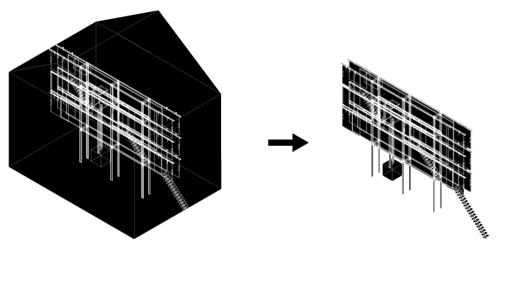

Monument of the Ordinary
FORA + André Adónis, Vassilis Oikonomopoulos
Competition Finalist - Installation - Guimarães - 2012

Monument of the Ordinary aims at exploring the possibilities and potentials for further experimentation within the parameters of preservation policies. The project's objective is to extract and install a piece of interior architecture in a public space, camouflaging it as part of the existing landscape. Producing a temporary architectural structure that will support a fully functioning compost toilet, the monument will become a thin slice of private yet public space within the historical city's centre. Conceptualized as an opening to the most personal action and function, the intervention acts as an interruption to the city's course of everyday normalcy.

Team: João Moura Fagulha, João Prates Ruivo, Raquel Maria Oliveira, André Adónis, Vassilis Oikonomopoulos. Client: Guimarães 2012.